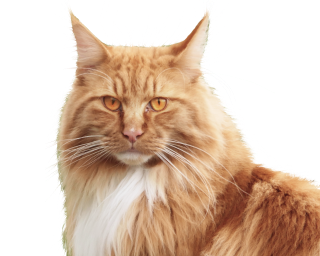

<header class="header">
  <div class="container">
    <div class="header__wrapper">
      <a class="logo header__logo" aria-label="Логотип питомника Мейн Кунов">
        <svg>
          <use xlink:href="img/sprite.svg#icon-crown"></use>
        </svg>
      </a>
      <ul class="social social__header">
        <li class="social__item">
          <a href="#" class="social__link">Вконтакте</a>
        </li>
        <li class="social__item">
          <a href="#" class="social__link">Твиттер</a>
        </li>
        <li class="social__item">
          <a href="#" class="social__link">Фейсбук</a>
        </li>
      </ul>
      <div class="header__content">
        <p class="header__city">Новосибирск</p>
        <h1 class="header__title">Питомник Мейн-Кунов</h1>
        <p class="header__text">Первый питомник с расширенным спектром услуг</p>
        <a href="#" class="header__link main-link">Смотреть котиков</a>
      </div>
      <div class="header__img header__img-mobile">
        
      </div>
    </div>
  </div>
</header>
